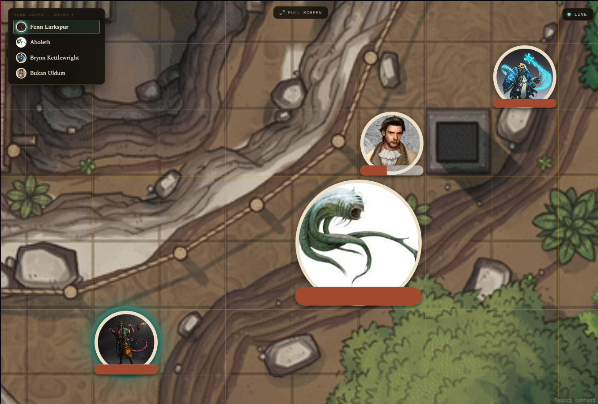

The Player Window
Running a Session · The Player Window
This is a second window meant to be dragged to another monitor or shared on a call, so players see the map without seeing your DM-only notes and controls.
Open it from the Open Player Window button in the shared header, next to Compendium search, reachable from any tab, not just Active Campaign. It stays open across runs, clicking the button again just brings the same window forward instead of opening a new one, and it closes automatically when you close the main app.

What it shows:
- When idle: the currently-selected location's background image with the location name overlaid, or the campaign's own background image if that location has none set. If neither is available, it shows the campaign's own name as a simple title card instead of a blank screen.
- When a run is live: it mirrors your map, fog-gated so hidden areas stay hidden, along with tokens, the ruler, pings, and drawings, following your camera automatically.
Turn order panel
Once an Encounter's turn order has actually started, a titled "Turn Order · Round N" panel appears for players: portraits, the current turn highlighted with a glowing ring, and anyone who's already acted this round dimmed and set off by a divider. Long names truncate instead of overflowing the panel. If the DM starts an Encounter but hasn't rolled turn order yet, it shows a plain "Waiting for battle to start" message instead of nothing, so players know a fight is coming.
A combatant hidden from players (via the map token popup or the Combatants list row) never appears in this panel either, same rule as everywhere else fog and visibility apply.

The hero screenshot at the top of this page shows the other state, "Waiting for battle to start," before the DM has rolled turn order.
There's a Pause button in the map toolbar if you need to rework the map without the players watching mid-edit, it freezes the second window entirely until you hit Resume.
Position lock and fullscreen
The Player Window normally follows your camera. If it is showing on a monitor lying flat on the table with real minis or tokens on it, that is a problem, every time you zoom or pan on your own screen the map underneath the physical pieces shifts. The lock toggle on the Live Run map toolbar fixes that: it snapshots the current view onto the Player Window, which then stops following you. Zoom and pan your own screen however you like, the table view does not move until you unlock. This is separate from Pause, which also freezes tokens, HP, and fog, lock only pins the camera. It clears on its own when the run ends.
The fullscreen toggle lives on the Player Window itself, a labelled button at the top center that fades away during play and comes back when you move the mouse. F11 toggles it, Esc exits. Fullscreen hides the window's title bar and the taskbar so the map fills the screen edge to edge, which is what you want on a dedicated table or TV monitor.
If you'd rather just post a snapshot somewhere (Telegram, for instance) instead of a live feed, use Export Player View from the map toolbar, it captures exactly what's currently revealed and lets you save or copy it as an image.